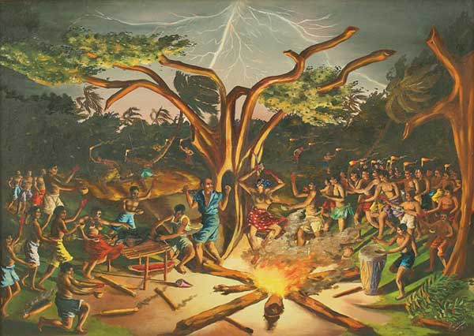

-
Art and Culture in Haiti after the Quake
by Hong-An Truong February 2, 2010

In the aftermath of the devastating earthquake that hit Haiti’s capital, Port-Au-Prince, on January 12th, the magnitude of human suffering and loss overwhelms. It is a feeling compounded by the legacy of colonial exploitation and postcolonial mendacity – the grim chain of human-induced events that tumble recklessly, one after another, exacerbating the current disaster. In the wake of such catastrophe it is important to understand our place in it – and consider it from a variety of angles. What, for example, is the role of culture, and how do we talk about it?
Last week both the New York Times and the Los Angeles Times featured headline stories about the impact of the earthquake on Haiti’s national treasures: the National Palace, the Notre Dame Cathedral, and the Episcopal Church’s Holy Trinity Cathedral, and collections at the Centre d’Art, Haiti’s main art museum, the Musee D’Art Nader, and at private homes. Assessing the damage to buildings and artworks, the two news articles read the power of culture as a symbol of strength; culture as evidence of beauty in the face of poverty and tragedy. Both stories isolate culture as a kind of naïve, hermetic beacon, at once inspiring, yet removed from historical and political context and devoid of complexity. The narratives cling to a narrowly understood narrative of heritage that eclipses responsibility and a wider view of the economic entangled with colonial history. Further, the articles’ sympathetic tones hover between condescension and romanticization, making a nostalgic object out of their poverty, their struggle for independence from slavery, and their cultural losses.
In his article, the New York Times’ Marc Lacey writes,
Long before its ground started heaving, Haiti was already a byword for a broken place. Its leaders were considered kleptocrats; its people were jaw-droppingly poor. But there was still a pride that burst forth from the people here, linked both to the country’s heroic history and to the vibrant culture that united them and enabled them to endure… in stealing symbols that gave Haitians their hope and grandeur and reminders of a common purpose, the earthquake cast a different kind of shadow over their future.
It’s a typical first world story of the poor, quaint, third world: all they have is their heritage. The missing context? Culture is what remains after colonialism plundered their resources, neocolonialism interfered with their politics, and neoliberalism made them economically dependent. Certainly Haiti’s own corrupt leaders have played no small role, but the lack of gesture towards the complexity of history contributes to a concept of both history and culture as pure, redemptive, and singularly edifying.
Notice also the way in which poverty is made a spectacle (“jaw-droppingly poor”) and the personification of the earthquake disaster as a faceless, uncivilized monster who takes without reason. In so doing, Lacey evokes an image of savagery not unlike the historical colonial narratives about the Caribbean that would, one hopes, would today make us cringe. Haiti and her culture are always already in the past (a la Fabian) – the “future” that Lacey suggests is one that the reader knows is always behind us. This temporal restructuring is hegemonic, isolating the Other in another time that is another place (The Past), even when the chronological time is the present.
To be sure, cultural objects, and the discourse surrounding them, have consistently served as pawns in our civilization’s long, ugly history of war and violence. Consider the collections of artifacts and antiquities housed in major historical museums across the Western world. These collections can be seen as a record of imperialist desire and the power to take (though often in the name of science and preservation). A weapon of nation-building, art objects are inextricably bound up with a kind of global ordering. They allow nations to claim history and shape it, to locate themselves via friend and foe alike.
Recall the looting of the Iraq National Museum. In the chaos of the American-led invasion of Baghdad in April of 2003, thousands of ancient artifacts and artworks were stolen from the unguarded institution. Despite an international demand to protect Iraq’s historical sites and buildings, the U.S. military showed little interest in preserving Iraq’s cultural history. Recall, also, the toppling of the 20-foot tall statue of Saddam Hussein in Firdus Square by a U.S. Marine Corps armored recovery vehicle in front of the international press. In this highly choreographed event, the U.S. made strategic use of certain, indigenous Iraqi symbols. This performance is in stark contrast to the manifest indifference displayed following the days of the museum’s looting, when U.S. soldiers stood by as pillagers ran amok with armfuls of antiquities, even as museum curators and conservators pleaded to them for help. This loss was devastating, a kind of irreversible destruction that mortar shells and smart bombs could never inflict.
Contrary to the U.S. history of disrespect towards Iraqi cultural history, the Los Angeles Times’ story reports that UNESCO, in collaboration with local arts collectors and historians, has located protection for its historical and cultural objects in advance of any potential looting in Haiti. Breathing a sigh of relief that for once, the U.S. and its allies at the U.N. can represent itself as a force of humanitarian goodness rather than a force of political violence, the international community paints themselves as noble saviors.
But similar to news stories that reported the pillaging of the Iraq Museum is the Times’ characterization of Haiti’s loss: “With dozens of galleries, museums and other venues badly damaged in the quake, Haiti’s arts community is sick at heart.” Represented as a kind of illness, the loss of art weakens the body of a skeletal nation. One can imagine that the destruction of the MoMA might merely rip a hole in America’s trouser pockets. But in the case of Haiti, such destruction is understood as illness because it attacks what is most vulnerable. Again we see the implication of a quaint, childlike weakness as representative of an entire people.
Civilizations cling to cultural objects, imbue them with history, and regard them as reflections of our collective consciousnesses. Culture remains a struggle over meaning and memory; one that enlarges an understanding of ourselves and our place in the world, on both individual and community levels. Global capital notwithstanding, a nation’s value resides in the history of its objects, in the history of how it has represented itself over time.
There can be no doubt that Haiti’s losses are deep, and the artists and arts community are suffering in ways that have not been adequately represented. In the midst of staggering death, there is sorrow over destroyed paintings, murals, sculptures, and old books: irreparable, irretrievable. The loss of these works is all their own, because it is their past, their history, their own present. As one Haitian artist interviewed by the New York Times, Patrick Vilaire, states plaintively, “The dead are dead, we know that. But if you don’t have the memory of the past, the rest of us can’t continue living.”

{kind=link}
{kind=link}